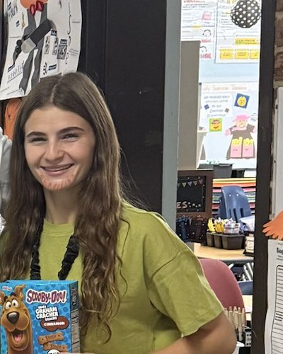

Background Information
My résumé, my philosophies of education and classroom management, and a little about me.
Childhood & Special Education · Birth–Grade 6
I'm a Child Study student at St. Joseph's University, New York, student teaching at Minnesauke Elementary School. This portfolio documents my growth from student into practiced educator.

Ms. Catsoris ✿
pick a section, or use the menu up top
My résumé, my philosophies of education and classroom management, and a little about me.
Lesson plans, classroom photos, anchor charts, student work, and feedback from my cooperating teacher.
Professional activities, awards, and my letter of recommendation.
Let's make a classroom magical together!
I'm seeking an elementary or special education teaching position for September 2027.